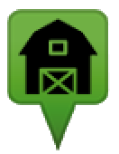

farmshops.eu - Direktvermarkter-Karte
Was ist das hier?
farmshops.eu ist eine Übersichtskarte, die Dir hilft die Adressen von Wochenmärkten, Hofläden, bäuerlichen Milch, -Eier- oder Essensautomaten und vielen anderen lokalen Direktvermarktern in Deiner Region zu finden. Die Karte basiert auf den Daten von openstreetmap.org und bereitet die Einträge optisch auf. Fehlende oder neue Daten kann man direkt auf OpenStreetMap eintragen. Die Informationen werden von dort regelmäßig abgeglichen.
Ich habe fehlende oder falsche Daten, wo kann ich die eintragen?
Alle Daten stammen von openstreetmap.org. Es gibt zwei Möglichkeiten neue Orte einzutragen:
Auf OSM bearbeiten
(Login notwendig)
Eintrag Vorschlagen
(ohne Login möglich, erfahrene Mapper tragen die Daten für Dich ein. Hier findest Du alle unbearbeiteten Vorschläge.)
Welche Einträge von Openstreetmap werden hier angezeigt?
Nur Orte mit folgenden Tags werden überhaupt angezeigt:
 shop=farm für Hofläden und Direktvermarkter aller Art
amenity=vending_machine für Verkaufsautomaten, jedoch nur mit:
- vending=food Für Essen
- vending=milk Für Milchautomaten
- Außerdem auch die vending-Einträge: eggs, tomatoes, cheese, sausages, potatoes, noodles, meat, honey, fruits
- Man kann auch mehrere angebotene Waren kombinieren, z.B. vending=eggs;sausages;vegetables;cheese uvm.
amenity=marketplace für Wochenmärkte
 craft=beekeeper für Imker
craft=beekeeper für Imker
Von all diesen Orte werden falls vorhanden alle weiteren Daten wie die Adresse oder die Öfnungszeiten im Popup angezeigt, wobei unbekante Tags in der Tabelle landen und teilweise Begriffe übersetzt werden.
Folgende Tags werden im Popup formatiert dargestellt:

Offnungszeiten werden im Openstreetmap-Format angezeigt. Darunter findet man einen grünen oder roten Text der angibt, ob die Einrichtung im Moment offen oder geschlossen ist. Jedoch werden Öffnungszeiten momentan nur ausgewertet, wenn sie keine (länderspezifischen) Schulferien enthalten.
Wie häufig werden die Daten abgeglichen und welchen Stand haben sie jetzt gerade?
Momentan werden die Daten mit einem Script manuell in regelmäßigen Abständen™ abgeglichen. Ein automatischer Abgleich ist geplant.
Wie erreiche ich euch?
- Auf der Webseite von Code for Karlsruhe gibt es Kontaktdaten und Infos zu den regelmäßigen Treffen.
- Den Quellcode und technische Planung gibt es auf GitHub
- Für generelle Fragen kann man eine Mail an farmshops@posteo.eu schreiben.
- Stefan Grotz koordiniert das Projekt und kann auch direkt angeschrieben werden.
Was gibt es für verwandte Projekte?
Folgende Seiten könnten für Nutzer dieser Seite auch interessant sein:
- Genaue Daten zu Wochenmärkten findet man bequem für viele Städte auf wo-ist-markt.de.
- Kräuter und andere öffentlich zugängliche Nahrungsmittel findet man auf mundraub.org
- Bei Marktschwärmer/Food Assembly organisieren sich Kunden und bestellen als Gruppe bei regionalen Erzeuger.